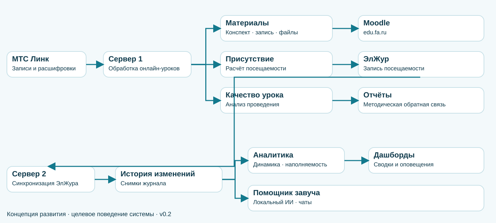
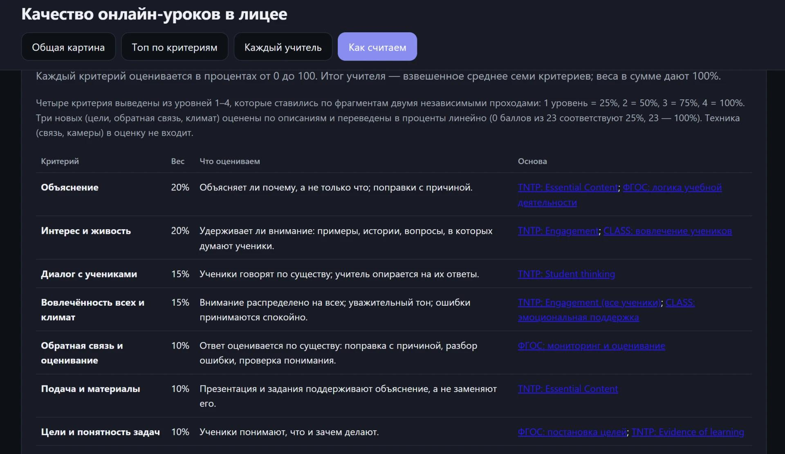
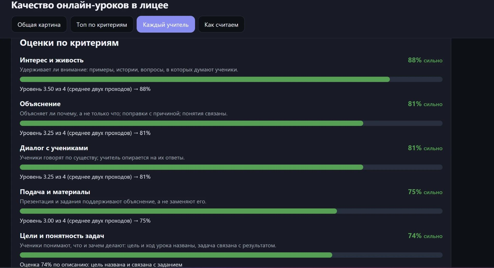
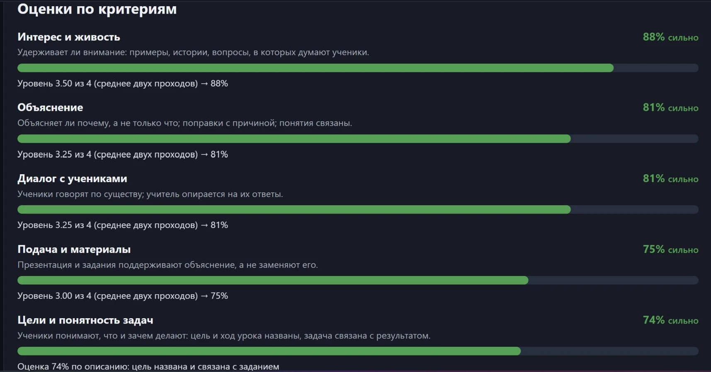
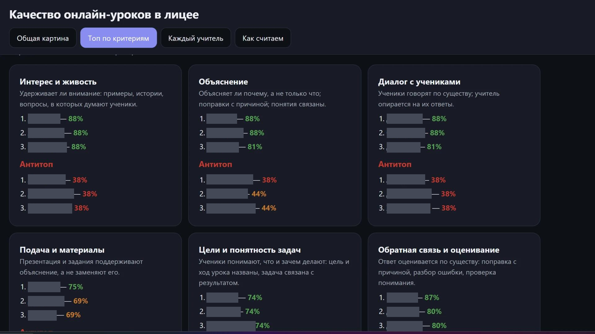
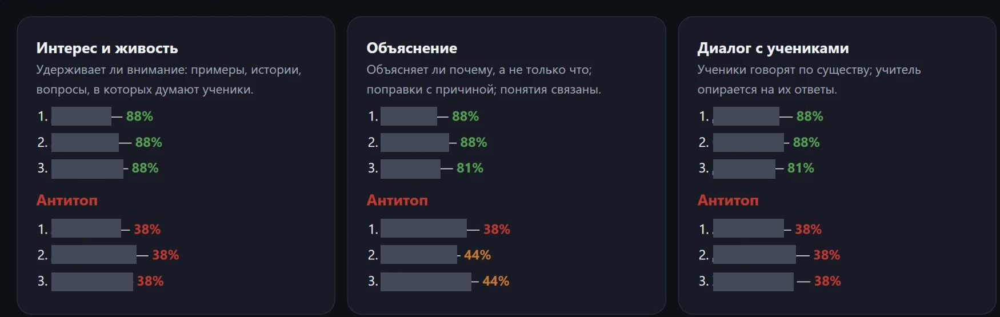

Логотип лицея, цветной
Происхождение и контекст
Локальный гайд «Лого_лицей6_ракета.pdf», страница 1
Векторные контуры PDF без перерисовки; прозрачный фон.
Материалы выступления. Эскизы второго корпуса отделены от документальных кадров лицея.
Локальный гайд «Лого_лицей6_ракета.pdf», страница 1
Векторные контуры PDF без перерисовки; прозрачный фон.

Локальный гайд «Лого_лицей6_ракета.pdf», страница 1
Векторные контуры PDF без перерисовки; удалена только демонстрационная подложка.

Предоставленная концепция «ЭСКИЗ ФУ5.pdf»
Эскиз, не фотография готового здания; страница 2.

Предоставленная концепция «ЭСКИЗ ФУ5.pdf»
Эскиз, страница 8.

Предоставленная концепция «ЭСКИЗ ФУ5.pdf»
Эскиз, страница 8.

architecture_two_servers_v02.md, актуальные architecture_ai_tutor.svg/.png из родительской папки
Code-native перерисовка v0.2: три параллельных ветви сервера 1; запись посещаемости в ЭлЖур; сервер 2 — управленческий помощник завуча. Концепция; API/регламенты требуют проверки.

Скриншот, предоставленный пользователем; контекст: https://altersam.github.io/Biology_VR/
Исполняемая сборка не проверялась; участие в «ВарФин» не заявляется.

https://github.com/Altersam/LFU
Конкретное событие и дата съёмки отдельно не установлены.

Фотография, предоставленная пользователем для этой презентации
Оптимизированная копия 864×1280, естественные пропорции, генеративных изменений нет.

Архивный материал из предоставленной подборки лицея
Конкретное событие и дата съёмки отдельно не установлены.

https://github.com/Altersam/LFU
Конкретное событие и дата съёмки отдельно не установлены.

https://github.com/Altersam/LFU
Кадрирование документального mirror.webp; интерфейс не перерисован.

https://github.com/Altersam/LFU
Конкретное событие и дата съёмки отдельно не установлены.

Архивный материал из предоставленной подборки лицея
Конкретное событие и дата съёмки отдельно не установлены.

Фото аудитории 44, предоставленное пользователем
IMG_20261112_165606.jpg — общий вид.

IMG_20261113_145642/145644/145646.jpg из родительской папки
Примеры экранов; не общая статистика. Фамилии в топ/антитоп закрыты непрозрачными масками; цифры сохранены.

IMG_20261113_145642/145644/145646.jpg из родительской папки
Примеры экранов; не общая статистика. Фамилии в топ/антитоп закрыты непрозрачными масками; цифры сохранены.

IMG_20261113_145642/145644/145646.jpg из родительской папки
Примеры экранов; не общая статистика. Фамилии в топ/антитоп закрыты непрозрачными масками; цифры сохранены.

IMG_20261113_145642/145644/145646.jpg из родительской папки
Примеры экранов; не общая статистика. Фамилии в топ/антитоп закрыты непрозрачными масками; цифры сохранены.

IMG_20261113_145642/145644/145646.jpg из родительской папки
Примеры экранов; не общая статистика. Фамилии в топ/антитоп закрыты непрозрачными масками; цифры сохранены.

https://altersam.github.io/Biology_VR/
Локально сгенерированный QR, ECC M, quiet zone 4; ведёт на концептбук, не на запуск игры.

https://www.fa.ru/school/social_vr_game/
Локально сгенерированный QR, ECC M, quiet zone 4; декодирование проверено.
https://www.fa.ru/university/structure/education/cyber/konkurs/
Официальный адрес подтверждён п.1.5 Порядка; QR декодирован, прямой сайт ранее возвращал403.
Предоставленный файл главного проморяда lfu_promo_min.mp4 (ранее использован в версии Grok)
Фрагменты 00:00–00:03, 00:07–00:10, 00:18–00:21, 00:26–00:29; 1280×720, без звука, CRF18.
Предоставленный архив «Промо-ролики»
VR.MOV, 00:33–00:41; проекции на стенах, без VR-шлемов.
Видео аудитории 44, предоставленное пользователем
VID_20261112_165516.mp4, 00:00–01:02, ускорено в 2,5 раза, 720×1280, без звука и без обрезки механизма.
Предоставленный архив «Промо-ролики»
Тед.mp4, 00:03–00:10; 1920×1080, без звука. TED — локальное название пространства; статус TEDx не заявляется.
Предоставленный архив «Промо-ролики»
VR.MOV, 00:10–00:17; без звука.
Запись пользователя 2026-11-13 14-44-37.mkv
Без звука; чувствительные области скрыты. Не показывает ввод запроса и генерацию. Детали масок и монтажа: research/fresh-media.md.
Предоставлено пользователем
Обработанная производная; исходники не публикуются
Видео предоставлено пользователем 13.11.2026: Холл.mp4
Фрагмент 9.1–17.1 с; H264 libx264 medium CRF18 yuv420p faststart; no audio; original size and rate
Видео предоставлено пользователем 13.11.2026: Деловой английский.mp4
Фрагмент 2.6–14.6 с; H264 libx264 medium CRF18 yuv420p faststart; no audio; original size and rate
Видео предоставлено пользователем 13.11.2026: 3 D моделирование и программирование.mp4
Фрагмент 0.5–14.5 с; H264 libx264 medium CRF18 yuv420p faststart; no audio; original size and rate
Видео предоставлено пользователем 13.11.2026: Студия звукозаписи.mp4
Фрагмент 2–15.4 с; H264 libx264 medium CRF18 yuv420p faststart; no audio; original size and rate
3 D моделирование и программирование.mp4; Зарубежная литература.mp4
Последовательный монтаж; оригинальная скорость, без звука; research/slide-revision-media/manifest-final.json
ТЭД.mp4; Холл.mp4; ДОП холл 3 этаж и 4 этаж.mp4
Последовательный монтаж; оригинальная скорость, без звука; research/slide-revision-media/manifest-final.json
Делком.mp4; Делком.mp4
Последовательный монтаж; оригинальная скорость, без звука; research/slide-revision-media/manifest-final.json
Зарубежная литература.mp4; Основы налоговой грамотности.mp4; Основы предпринимательской деятельности.mp4
Последовательный монтаж; оригинальная скорость, без звука; research/slide-revision-media/manifest-final.json
Полит. социология.mp4; Экономика на английском.mp4; Языковый практикум.mp4
Последовательный монтаж; оригинальная скорость, без звука; research/slide-revision-media/manifest-final.json
Киоски-информеры.mp4; Киоски-информеры.mp4
Последовательный монтаж; оригинальная скорость, без звука; research/slide-revision-media/manifest-final.json